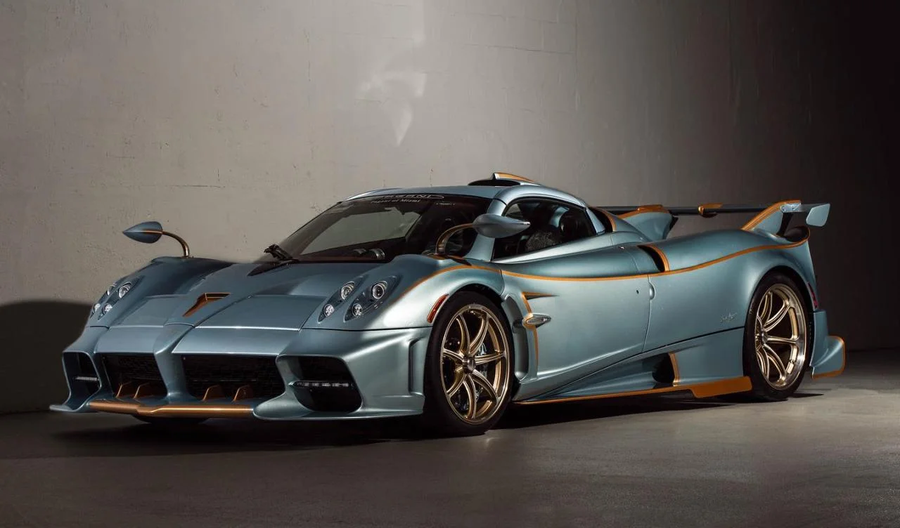

Featured Models
Zonda
The original Pagani hypercar with a Mercedes-AMG V12 and iconic styling.
Zonda R
Track-only monster with carbon chassis and screaming naturally aspirated V12.

Huayra
Active aerodynamics, twin-turbo V12, and handcrafted interior perfection.
Huayra BC
Lighter, sharper, and more aggressive version of the Huayra.

Imola
1,250 kg track-focused Huayra derivative with 827 hp.
Utopia
Pagani's latest creation: an analog driver's hypercar with timeless design.